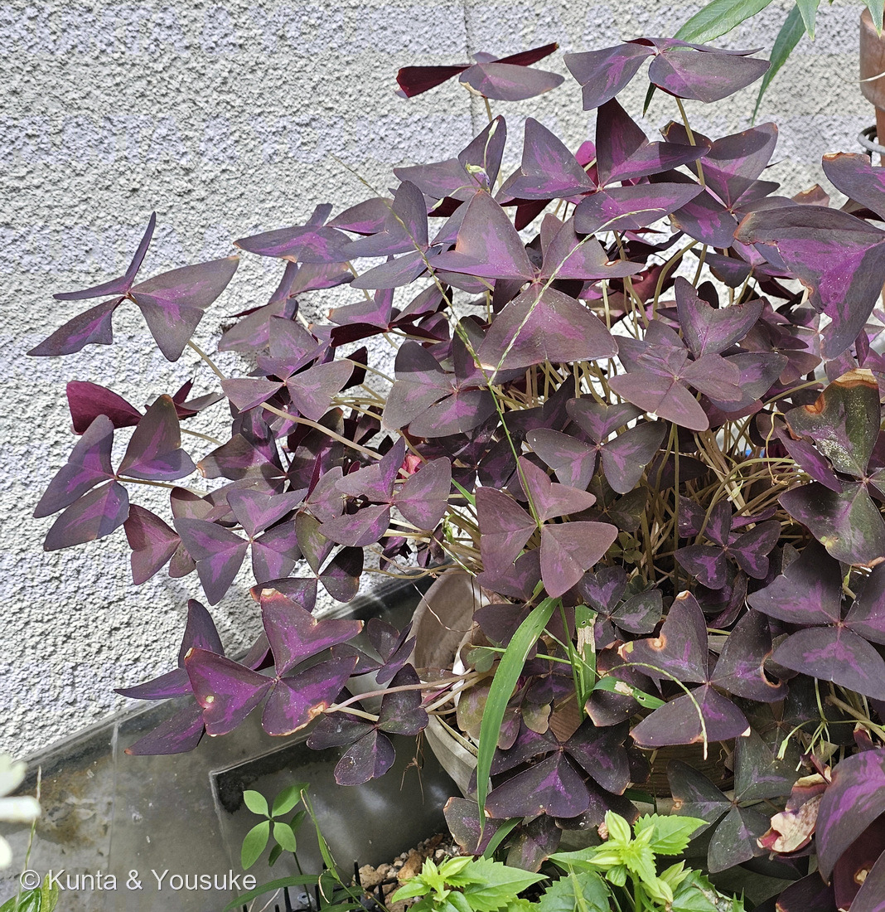
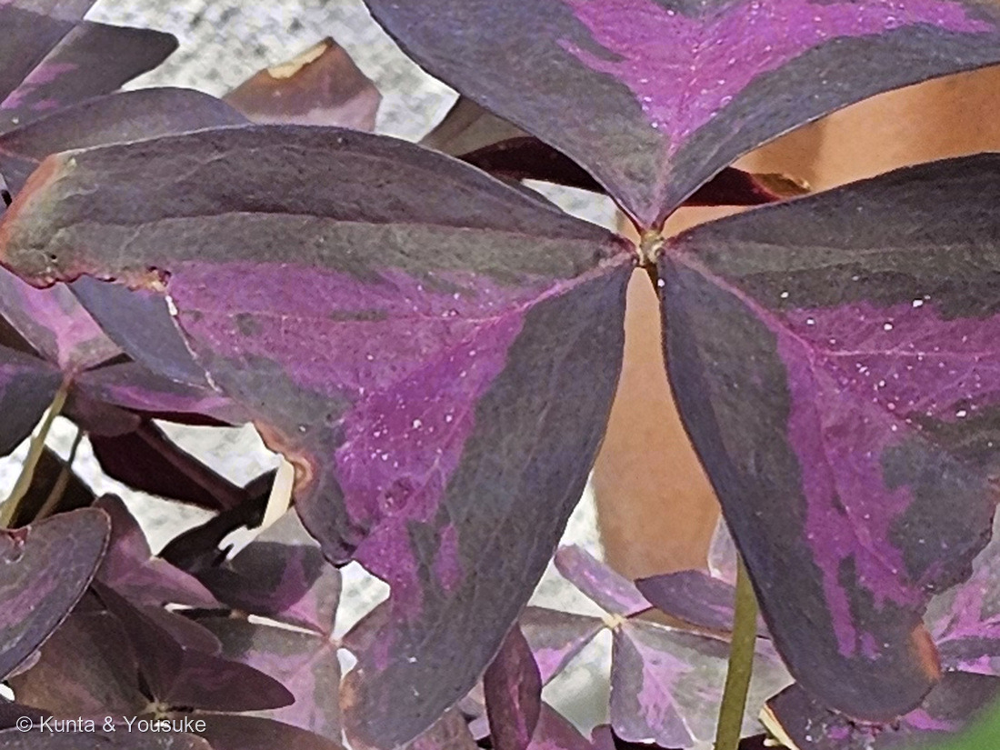
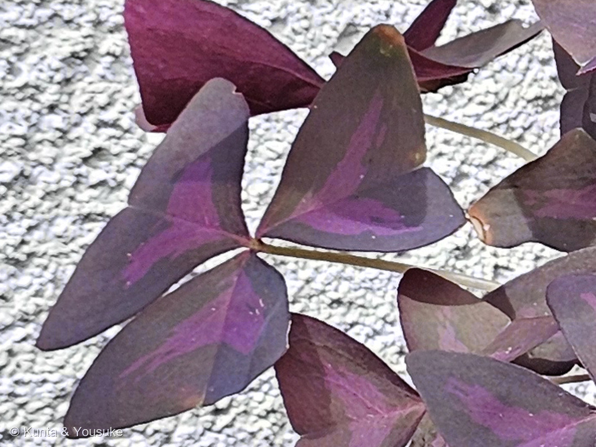
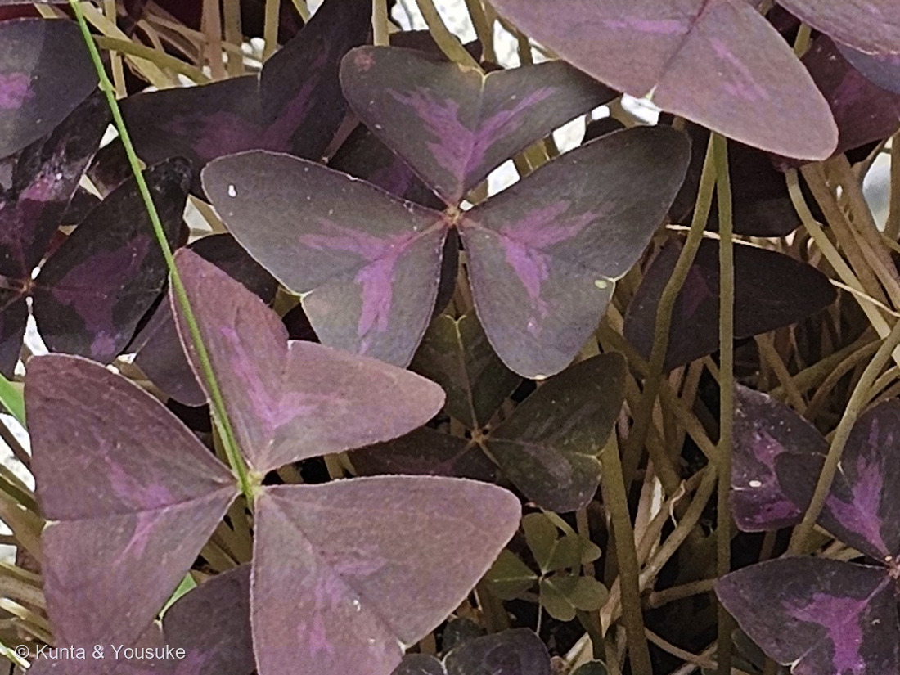
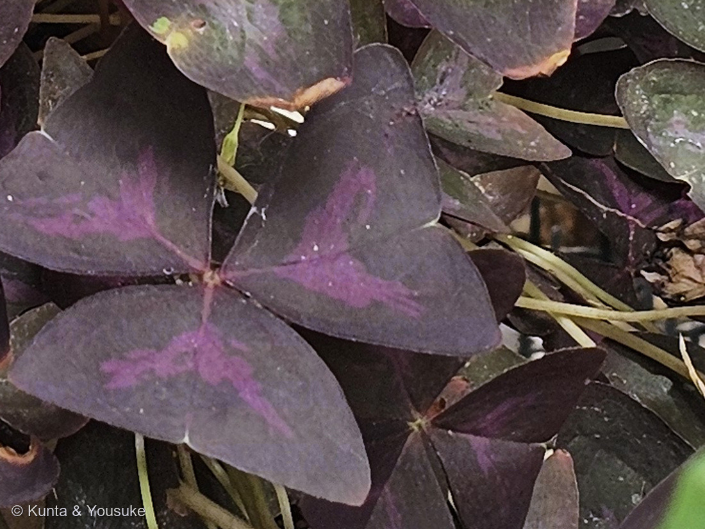

地図を読み込んでいるよ…
🔍 写真も地図も、押しているあいだ拡大して見られるよ（スマホは指を置いてすこし待ってね）。
🌍 の地図＝この子がもともと自生している場所を緑に。南アメリカ（ブラジル・ボリビア・アルゼンチン・パラグアイ）。⚠日本では鉢や花壇で育てられているだけで、野生のこの子はいないよ。
⭐⭐ふるさとは南アメリカの、まんなかから南のほうだよ＝ブラジル・ボリビア・アルゼンチン・パラグアイ。⚠⚠この緑は、ほんとうよりずっと広く見えている＝地図は国までしか塗れないので、ブラジルもアルゼンチンも国ぜんたいが緑になってしまうから。⚠日本は塗っていない＝鉢や花壇で育てられているだけで、野生のこの子はいないよ。⭐⭐⭐おまけのムラサキカタバミも、同じ南アメリカ原産＝でもあちらは観賞用に持ちこまれたあと日本中で野生化した＝⭐同じ属で、同じ大陸から来て、いっぽうは鉢の中、いっぽうは道ばた。分かれ道はどこだったんだろうね。⭐⭐同じ日に会った320 モンカタバミはメキシコから＝カタバミ属は南北アメリカに多い仲間なんだ。
⚠ 地図は国（日本と中国だけ県・省）までしか塗れないから、ほんとうの分布より広く見えていることがあるよ。地図はだいたいの場所。正確なところは、上の文を見てね。
サンカクカタバミ（三角片喰）
Oxalis triangularis A.St.-Hil.
別名 インカカタバミ · オキザリス・トリアングラリス · 紫の舞 · 烏羽オキザリス · 英名 False shamrock（にせシャムロック）
カタバミ科 · Oxalidaceae（カタバミ属 Oxalis · カタバミ目 Oxalidales）── ⭐カタバミ科は、この子を入れて図鑑に4人（080 カタバミのなかま・086 ゴレンシ・320 モンカタバミ）／⭐⭐320とは同じ日・同じ保存地区で会っている
燻太さんの言葉「よく見ると、小葉の内側は明るめの紫色。その部分は葉緑体も少ない斑入りの状態なのかもしれない（よそのおうちの子だから、顕微鏡観察はできないよ。こぼれダネで野生化した子がいたら分けてもらおう。）」── ⭐⭐⭐写真の色を測ってみたら、同じ向きの答えが出たよ
⭐⭐⭐⭐⭐ 燻太さんの見立て ── 「明るい紫は、葉緑体が少ない斑入りかもしれない」
⭐⭐ まず、その斑紋は出典にもちゃんと書いてある
- ⭐三河の植物観察は、この子の葉をこう書く。「上面の中脈から放射状に薄い紫色の斑点をもち」──⭐燻太さんが見つけたところ、そのものだよ。
- ⭐写真②④⑤を見て。──3枚の小葉のどれにも、中脈のあたりから外へ向かってV字（というより矢じり形）の明るい紫がひろがっている。
- ⚠⚠でも、「なぜそこだけ薄いのか」を書いた出典には、ぼくはたどりつけなかった。
⭐⭐⭐⭐⭐ だから、写真の色を測ってみた
⭐透かしを入れるまえの画像で、明るいV字の部分とまわりの暗い部分を、3か所ずつ平均したよ。
- ⭐紫の葉（写真②）
- まわりの暗い部分＝赤 105.5 ／ 緑 83.9 ／ 青 96.6
- 明るいV字の部分＝赤 140.8 ／ 緑 89.9 ／ 青 128.5
- ⭐⭐赤が +35.3、青が +31.9 ふえているのに、緑は +6.0 しかふえていない。
- ⭐緑がかった葉（写真⑤）
- まわりの暗い部分＝赤 92.2 ／ 緑 77.8 ／ 青 87.1
- 明るいV字の部分＝赤 128.7 ／ 緑 97.0 ／ 青 120.4
- ⭐⭐こちらも同じ＝赤 +36.5、青 +33.3 に対して、緑は +19.2。
⭐⭐⭐⭐ この数字が言っていること
- ⭐⭐⭐クロロフィル（葉緑素）は、赤い光と青い光を吸って、緑を返す。⭐だから葉は緑に見えるんだよね。
- ⭐⭐⭐⭐⭐ということは、クロロフィルが少ない場所では、吸われずに残った赤と青が返ってくる。──⭐まさに、測った通りの変わりかた。
- ⚠⚠もし「アントシアニン（紫の色素）が少ないだけ」なら、下にある葉緑体が透けて見えるので、緑がふえるはず。⭐でも緑は、ほとんどふえていない。
- ⭐⭐⭐つまり──燻太さんの見立てと、同じ向きの答えが出た。
⚠⚠ でも、ここまでだよ
- ⚠ぼくがやったのは色を測っただけで、細胞は見ていない。⭐斑入りかどうかは、葉緑体を数えないと決まらない。
- ⚠写真の色は、光の向き・ホワイトバランス・JPEGの圧縮に左右される。⭐同じ写真の中でくらべたので向きは信じられると思うけれど、絶対の値ではないよ。
- ⚠V字の部分は中脈のまわりだから、単に葉が厚い／薄いちがいかもしれない。
- ⚠アントシアニンとクロロフィルの両方が少ない、という可能性もある。
- ⚠⚠そしてこの読みは、出典に書いてあったことではなくてぼくの整理だよ。
⏳⭐⭐⭐⭐⭐ ちぎらずに、もう一歩進める手がある
⭐⭐燻太さんの「よそのおうちの子だから顕微鏡観察はできない」は、そのとおり。⭐でも、さわらずにできることが1つあるよ。
- ⭐⭐⭐葉を下から、空を背にして撮る（光にすかす）。
- もし葉緑体が少ないなら＝その部分は明るいピンク〜赤紫に透ける（赤い光が素通りするから）。
- もしアントシアニンが少ないだけなら＝葉緑体はあるので、緑っぽく透けるはず。
- ⭐あわせて葉の裏も1枚。──斑紋が裏にも出ているなら葉の全層の話、表だけなら表側の細胞層の話になる。
- ⏳⭐⭐そして、いつか自分の株を手に入れたら顕微鏡。──⭐009 オジギソウで二次葉枕の横断面を見たのと、まったく同じやりかたでできるよ。
⭐⭐⭐ 名前と学名の由来
- ⭐⭐種小名の triangularis は、そのまま「三角形の」。⭐小葉が倒三角形だからだね。⭐和名のサンカクカタバミ（三角片喰）は、その直訳。
- ⭐属名の Oxalis は、ギリシャ語の oxys（すっぱい） から。⭐カタバミの仲間がシュウ酸を含んで酸っぱいことから（⭐320 モンカタバミと同じ属だよ）。
- ⭐シノニムの Oxalis regnellii は、スウェーデンの医師で植物採集家 アンデシュ・レグネルへの献名。⭐園芸では 'Regnellii'（緑葉・白花）が「緑の舞」の名で売られている。
- ⭐⭐⭐そして日本の流通名。──暗紫色の葉のものが「紫の舞」、緑のものが「緑の舞」。⚠どちらも品種名ではなくて、葉の色でまとめた呼び名なんだ。⭐もとは同じ種だよ。
- ⭐別名の「烏羽（からすば）オキザリス」は、カラスの羽の黒紫から。⭐三河の植物観察は、この子を「インカカタバミ」の名で載せているよ。
- ⭐⭐英名は False shamrock（にせシャムロック）・Purple shamrock・Love plant。⚠アイルランドのシャムロック（三つ葉）はふつうシロツメクサやコメツブツメクサのことだから、「にせ」なんだね。⭐007 シロツメクサと320 モンカタバミの話の続きだよ。
⭐⭐ この植物のこと
- カタバミ科カタバミ属の多年草。⭐ふるさとは南アメリカ（ブラジル・ボリビア・アルゼンチン・パラグアイ）。
- ⭐⭐茎がない（無茎）。──葉は根から直接出る（根生）。⭐葉柄は長さ12〜20cmもある。⭐写真④の、地際から束になって立ちあがっている柄がそれだよ。
- ⭐⭐地下には根茎がある。──枝は短く、直径1cm、密に鱗片があって、小球根がときにできて束生する。⭐NC State Extension は「鱗片葉をもち、水と養分をためる」「細長い球根のよう」と書いている。
- 高さは5〜30cm。小葉は長さ(20〜)30〜50(〜60)mm。
- 花は白色〜帯ピンク色〜淡紫色、長さ15〜22mm。花期は5〜10月。⚠この日は咲いていなかったよ。
- ⚠株ぜんたいにシュウ酸カルシウムを含む（NC State Extension）。⭐カタバミの仲間らしいね。⚠たくさん食べるものではないよ。
⭐⭐⭐⭐⭐ 夜になると、葉を閉じる ── 009 オジギソウと同じしくみ
⭐⭐⭐この子には、写真に写っていない大事な性質がある。
- ⭐⭐⭐⭐⭐NC State Extension はこう書いている。「The leaves close up at night or when disturbed（葉は夜になると、あるいはさわられると閉じる）」
- ⭐⭐そして花も夜に閉じる（“close at night”）。⭐きのう登録した323 アメリカンブルーも、花が夜と曇りの日に閉じる子だった。⭐⭐2日つづけて「夜に閉じる子」に会ったことになるね。⚠ただし、あちらは花が閉じて、この子は葉が閉じる。
- ⭐⭐⭐⭐⭐ここが面白いところ。──009 オジギソウも、触ると閉じて、夜も閉じる子だった（だから別名ネムリグサ）。
- ⭐⭐⭐009のページに、ぼくはこう書いていた。「葉の付け根の『葉枕（ようちん／pulvinus）』の細胞が、刺激を受けると急に水（膨圧）を失って葉が折れ曲がる」──⭐この子の三つ葉が閉じるのも、同じ「葉枕」のしくみだよ。
- ⭐⭐科はまったくちがう（オジギソウ＝マメ科／この子＝カタバミ科）。⭐それなのに、同じ道具（葉枕）で、同じことをしている。⚠この整理はぼくのものだけれど、ならべてみたくなる話だよね。
- ⏳⭐⭐⭐だから宿題にした。──夜に、もう一度あの玄関先を見に行く。⭐昼の写真①と、夜の姿をならべたい。
⭐⭐⭐⭐ 「野生化した子がいたら」── その答え
⭐⭐燻太さんの「こぼれダネで野生化した子がいたら分けてもらおう」について、2つだけ。
- ⭐⭐ひとつめ。──この子は種よりも、根茎と小球根でふえる（三河「根茎がある。枝は短く、直径1cm、密に鱗片がある。小球根がときにあり、束生」）。⭐だから待つなら「こぼれダネ」より、こぼれた球根のほうが早いかもしれないね。⚠これはぼくの読みだよ。
- ⭐⭐⭐⭐ふたつめ。──野生化したカタバミ属なら、もう道ばたにいる。
- ⭐おまけにしたムラサキカタバミ（Oxalis corymbosa）は、この子と同じ南アメリカ原産で、観賞用に輸入されて野生化した子。
- ⭐⭐しかも地下の鱗茎でふえて、実はつかない。──種を作らないのに、日本中に広がったんだ。
- ⭐⭐⭐そして名前と色が、この子と入れかわっている。──「ムラサキ」と名がつくのに葉は緑で、紫なのは花。⭐この子は反対で、葉が紫で花は白〜淡紅色。
出典：学名 Oxalis triangularis A.St.-Hil.（シノニム Oxalis regnellii Miq.）・別名がオキザリス･トリアングラリス、紫の舞、三角葉オキザリス、烏羽オキザリスであること・無茎で根茎があり、枝は短く直径1cm、密に鱗片があって小球根がときにあり束生すること・高さ5〜30cmの多年草であること・葉が根生で葉柄が長さ12〜20cmであること・小葉が3個で倒三角形〜倒卵状三角形、長さ(20〜)30〜50(〜60)mm、先に単にノッチがあり裂片の先が切形であること・小葉が三角形で濃紫色又は薄緑色であること・上面の中脈から放射状に薄い紫色の斑点をもつこと・花弁が白色〜帯ピンク色〜淡紫色で長さ15〜22mm、花期が5〜10月であること・南アメリカ（ブラジル、ボリビア、アルゼンチン、パラグアイ）原産の外来種であること・Oxalis triangularis subsp. papilionacea 系統の園芸品種が多く 'Regnellii'＝O. regnellii［緑の舞］（緑色、白花）があることは三河の植物観察「インカカタバミ」。英名が False Shamrock、Love Plant、Purple Shamrock、Purple Wood Sorrel であること・根茎が鱗片葉をもち水と養分をためる「細長い球根のような」構造であること・三出複葉がシャムロックに似ること・葉の色が緑から斑入り、濃い栗色まで変わること・葉が夜になると、あるいはさわられると閉じること・白〜ピンクの5弁花が房になって咲き、夜に閉じること・株全体が可溶性シュウ酸カルシウムを含むことはNC State Extension Gardener Plant Toolbox「Oxalis triangularis」。おまけのムラサキカタバミ（Oxalis corymbosa DC.／和名は紫片喰、紫酢漿草・地下の鱗茎によって増え実はつかない・葉は幅2〜4cmのハート形の3小葉・葉の裏に橙黄色の微細な小点がある・花は直径約2cmの淡紅色で花弁5個、基部に濃色の条線・雄しべは10個で5個が長く5個が短く葯の色は白色・花期5〜7月・南アメリカ原産で観賞用に輸入され野生化・道端や庭に生える・イモカタバミは花の色が濃く葯の色が黄色）は三河の植物観察「ムラサキカタバミ」。オジギソウの葉枕（pulvinus）が刺激を受けて膨圧を失い葉が折れ曲がることは009 オジギソウのページに書いたとおり。⭐写真の色を測ったこと（明るいV字の部分とまわりの暗い部分を3か所ずつ平均）と、その読み（クロロフィルは赤と青を吸うので、それが減れば赤と青が返ってくる／アントシアニンが減るだけなら緑がふえるはず）、「ちぎらずに光にすかせば区別できる」という提案、そして「オジギソウとこの子は科がちがうのに同じ葉枕のしくみを使っている」「こぼれダネより、こぼれた球根のほうが早いかもしれない」という整理は、ぼくのものだよ。⚠写真の色は光の向き・ホワイトバランス・JPEG圧縮に左右されるので、絶対の値ではないし、細胞を見たわけでもない。